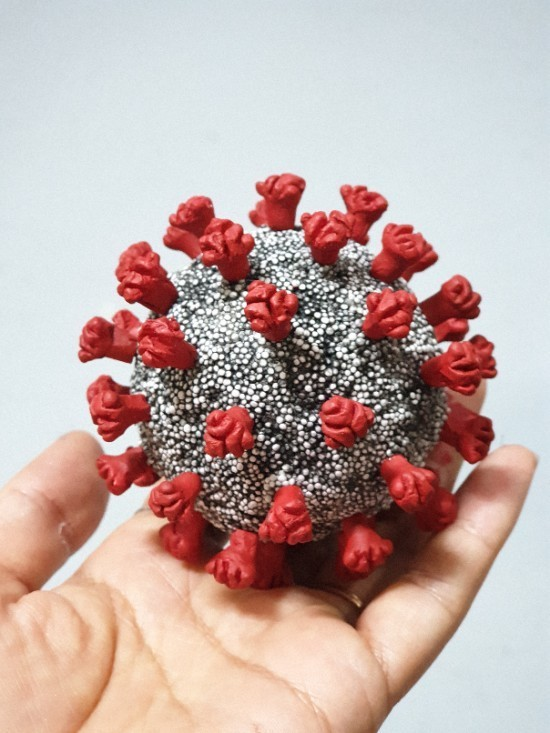

2019년 12월 중국에서 발생한 바이러스

코로나의 장단점 <코로나의 장점> 1자연이깨끗해졌다 코로나로 인해 집에만 있게되어 자연이 더 깨끗해지게 되었다. 2신기술이 개발됬다 3비대면 행위가 확대 되여 불필요한 모임 행사 자제 4 코로나 덕분에 마스크를 많이 씁니다. 마스크의 영향으로 3월에 매년 유행하던 독감이 유행 하지 않았습니다. <코로나의 단점>
1자연이깨끗해졌다 코로나로 인해 집에만 있게되어 자연이 더 깨끗해지게 되었다.
2신기술이 개발됬다
3비대면 행위가 확대 되여 불필요한 모임 행사 자제
4 코로나 덕분에 마스크를 많이 씁니다. 마스크의 영향으로 3월에 매년 유행하던 독감이 유행 하지 않았습니다.
<코로나의 단점>